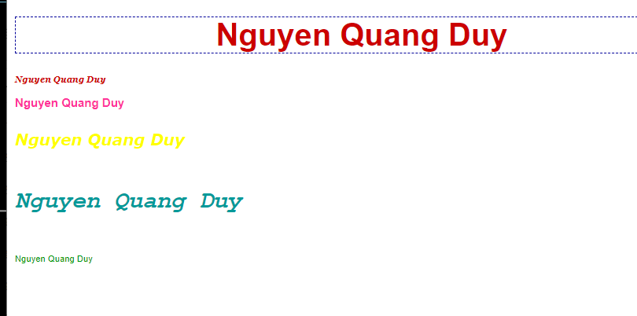

 This article introduces the topic of laying out web pages inCSS using a combination of positioning schemes.
CSS allows you to use three different positioning schemes to create complex layouts:
By using a combination of these schemes you do not need to resort to using tables to lay out your pages.